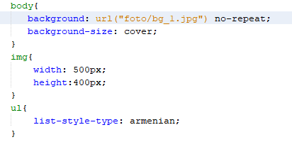
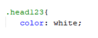
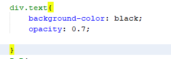
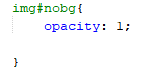
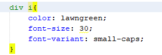
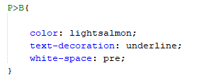
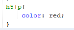
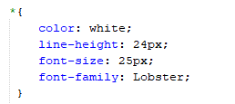
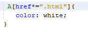

Тег
Класс
Тег+клас
Id
Id+тег
Контекстне
Дочірний
Сусідні
Унікальний
Атрибут

Висновок:
Під час виконання даної лабораторної роботи, ми ознайомилися
з каскадними таблицями стилів CSS та отримали практичні навички роботи з
селекторами,ідентифікаторами, списками,різноманітними властивостями кольору
і фону, зовнішними та внутрішними відступами,
плаваючими елементами, оформленням текстових елементів